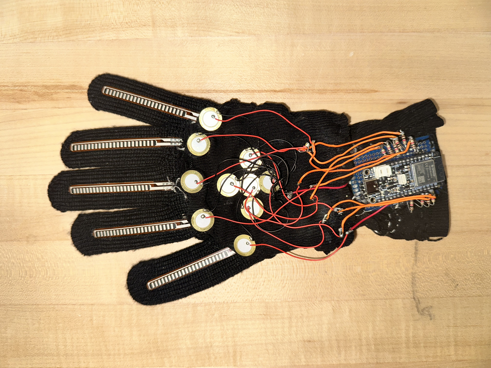
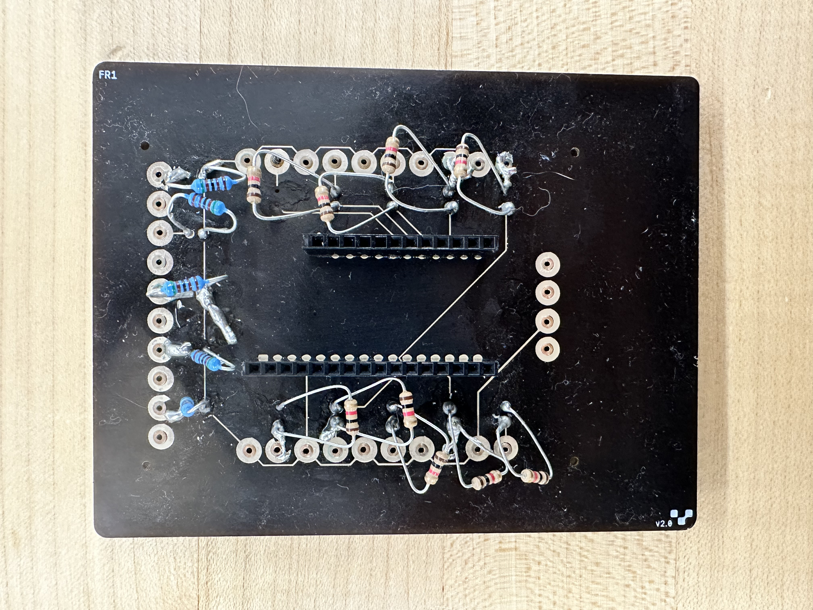
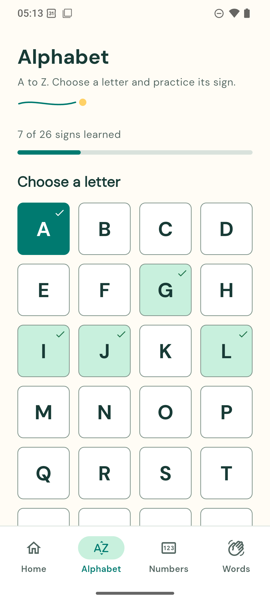
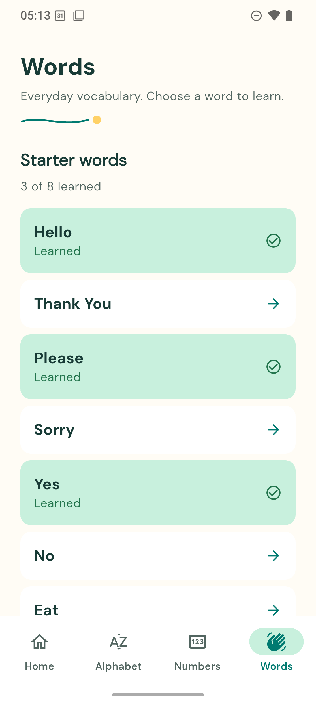

Five flex strips + ICM-20948
Finger bend, acceleration, and rotation feed recognition.
Post-mortem · November 19, 2026
Feedback between
ASL lessons.
Beginners practicing on their own need a way to check the handshape or motion they just made.

0:00–0:25 · 25 seconds. Point to the finished glove and introduce the team.
“When you practice American Sign Language between lessons, a reference can show the handshape or movement you’re aiming for. You still need a way to check the attempt you just made. We built Helping Hand, a sensor glove and Android app that let you practice selected signs, see what was recognized, and keep track of completed lessons.”
System overview
Five flex strips
+ motion sensor
Reads sensors
+ classifies held poses
Readings, predictions
+ pulse acknowledgments
Recognizes motion
+ saves completion
One pose model (MLP) on the ESP32.
Separate J/Z and word sequence models (TCNs) on the phone.
0:25–1:00 · 35 seconds. Follow the diagram from the glove to the phone, then point to the return arrows.
“Five strips measure finger bend, and the motion sensor measures acceleration and rotation. The ESP32 reads the sensors and recognizes held poses on the glove. It sends those predictions and sensor readings over Bluetooth. On the phone, two small models look at whole attempts, one for moving letters J and Z and one for selected words. Flutter compares the prediction with the target and saves a completed lesson. In the feedback demos, the app also requests buzzer pulses over Bluetooth, and the glove reports which output activated. Here’s the hardware that does that.”
Final hardware

Finger bend, acceleration, and rotation feed recognition.
Five by the fingers and five in a plus on the back of the hand.
Discrete wiring on perfboard after PCB and conductive-thread iterations.
1:00–1:40 · 40 seconds. Point to the strips, cuff electronics, and piezos. Indicate the smaller PCB photo when explaining the build change.
“This is the glove we’re using today. The flex strips run along the fingers, and the ESP32 sits on perfboard at the cuff. We installed and calibrated the new ICM-20948 motion sensor. Five piezo buzzers sit near the fingers and five form a plus on the back of the hand. That gives us a way to identify a finger and show a direction in the feedback demo. The smaller photo is our custom PCB prototype. We finished on perfboard with individual wires after problems with the board and conductive thread. We’ll power the glove over USB today after problems with battery operation.”
The learner experience



One-wearer live check
3/3 each · G, I, 1, Hello, Please, Yes
1/3 each · K, X
1:40–2:25 · 45 seconds. Point across the lesson picker, A reference, and learned Words rows.
“The learner chooses a lesson in Alphabet, Numbers, or Words. The A screen shows the 3D reference and the hold-progress area. In a connected lesson, the app checks that a held sign stays matched. For motion, the learner starts and finishes an attempt. The glove model covers 24 letters and all ten digits. The presentation build adds J and Z on the phone. The app offers eight word lessons and the bundled model covers Hello, Please, and Yes. Accepted lessons save to the app’s progress, shown here on the green rows. In a live check with one wearer, six targets passed all three attempts each. K and X passed one of three each. Let’s try the same practice flow with the connected glove.”
Live demonstration
Look for the checkmark in Words.
2:25–4:05 · 100 seconds. Switch to the projected phone or keep it visible alongside the cue slide. Start signed in, connected, and in Developer Mode.
G. “I’ll choose G and hold it steady. Watch the match and hold indicator. This prediction comes from the glove.”
Z. “Now I’ll start an attempt, trace Z, and finish it. The phone uses the motion readings over that attempt.” Use the actual outcome. If needed, make one brief recovery or move on. I is the rehearsed spare held pose.
3. “I’ll keep my middle finger curled so you can see what happens when I need to straighten it. First look for the finger pulse, then watch the dots move from bottom to center to top. I’ll straighten the finger and the app can finish the lesson.”
Hello and Please. “I’ll start and finish Hello. After a match, the glove can replay a preset sequence, left, center, right. Please uses a loop around the back of the hand.” Show Please if there is time. Narrate physical activation and wearer sensation as observed.
Progress. “Back on Words, a green row and a checkmark mark a saved lesson.” If the row was green at the start, describe its saved state. If a new row turns green, call out the change. Return to slide 6. Follow the timed run sheet for the sequence and recovery.
Successes
4:05–5:25 · 80 seconds. Tell each story in about 25 seconds and hand off to the lessons.
Practice that carries over. “Our first challenge was making a prediction meaningful to a beginner. We tied it to the selected lesson and only saved completion after the app accepted a match. That made the result visible as a completed lesson and gave the learner something to come back to. During rehearsal, we closed and reopened the app and could still see the completed signs.”
Motion came into practice. “A whole word is too much to describe with one frame. We recorded complete attempts and chose a compact temporal model to run on the phone. After the rebuild, we collected more recordings and extended the input window so it could keep more of the motion. The updated word model completed all five matching attempts in offline replay, and Hello, Please, and Yes completed in our live practice check. The same attempt interaction also gave us a way to add J and Z.”
A cue tied to a correction. “We could already activate individual buzzers, but we wanted the cue to depend on the learner’s attempt. For Number 3, we used measured bend ranges for the middle and pinky fingers. The app sends one pulse at a time and highlights the locations confirmed by the glove. The timed correction demo worked in one on-glove rehearsal. That gave us an example of closing the loop for a specific sign.”
Challenges
The PCB broke, and the thread build lost sensor readings. We switched to discrete wires.
Test connections during movement.Add strain relief before final mounting.
Damaged thumb and index sensors stayed near their unbent readings.
Inspect raw signals early.Recheck calibration and known signs after hardware changes.
Nine matching word recordings from the rebuild failed to complete with the earlier model.
Plan for retraining and fresh tests.Reserve attempts across wearers and include likely mistakes.
5:25–6:40 · 75 seconds. Spend about 25 seconds per example.
Connections under movement. “Our custom PCB broke and its engraved traces gave us unreliable connections. The conductive-thread version also lost readings during use. We suspected shorts and switched to individual wires. Next time we’d check continuity while flexing the assembly and add strain relief before mounting a board on the glove.”
Sensor failures that looked like recognition failures. “The thumb and index channels sometimes stayed near their unbent readings even when the fingers moved. An informal tryout helped send us back to the raw channels, where we found damaged sensors and replaced them. Next time we’d check every channel independently, record calibration after every rebuild, and rerun a few known signs before trying to tune the model.”
Limited recordings and inconsistent results. “Movement speed and the rebuilt sensors changed what the model saw. We found nine correct word attempts that the earlier model failed to complete in offline replay. We retrained, but our tests still covered few wearers and targets, and K and X were inconsistent live. Next time we’d reserve fresh attempts from additional wearers, include similar and unrelated signs, and record misses as well as matches.”
Helping Hand
Selected signs now connect to practice feedback and saved lessons.
6:40–7:00 · 20 seconds. Leave this slide up for the two-minute question period.
“We built a glove and app that let beginners get feedback on selected ASL signs and return to saved lessons. Our strongest lesson was to test from the moving glove all the way to the saved result. The next step is to check recognition across more wearers and find out whether people can reliably feel and interpret the cues.”
Backup · scope
| Area | Original goal | Presentation build |
|---|---|---|
| Wearable | Mounted PCB and battery power | Wired perfboard, calibrated ICM-20948, and USB power |
| Recognition | A–Z, 0–9, and eight words | 34 held poses plus J/Z motion. Eight lessons, three words in the bundle. |
| Feedback | Corrective guidance during practice | On-screen matching and saved progress. Developer Mode adds a finger cue for 3 and preset playback for Hello and Please. |
| Validation | Practice and recognition testing | Selected live and offline checks. Multi-wearer accuracy, tactile interpretation, and battery runtime remain open. |
Question period. The slide distinguishes the original scope from the build being shown. The original design proposed a mounted PCB, battery operation, broader word recognition, and general corrective feedback. The working app includes J/Z and the scoped haptic demos. The written reports describe the earlier release snapshot. Displayed lesson counts and recognition model labels describe different parts of the app.
The demo uses the wired perfboard glove, USB power, a signed-in Android phone, Flutter app version 1.0.1+2 from the gael working copy, and the piezo_demo ESP32 environment. The review base was c72ad4f with local app changes. Record the actual running revision, phone/OS, and firmware during rehearsal. Current-device cloud readback, battery runtime, and broad wearer validation are open. The single glove has limited ability to distinguish finger spread or infer hand location relative to the body.
The app also has developer tools for BLE diagnostics, recording and exporting labeled attempts, and manually testing the piezo outputs. These tools support setup and development. The learner demonstration uses Alphabet, Numbers, and Words.
Backup · results
| Check | Observed result | Scope |
|---|---|---|
| Live practice | G, I, 1, Hello, Please, Yes · 3/3 each K, X · 1/3 each | One wearer, three attempts per target |
| J/Z replay | 4/4 matches accepted 0/36 unrelated recordings accepted | Offline, with some recordings seen during development |
| Word replay | 5/5 matches accepted 0/25 wrong-target checks accepted | Offline, with recordings reused across wrong targets |
| Haptics | Manual outputs matched app dots. The automatic 3 demo worked on the glove. | Hello and Please cue order checked in software with simulated responses |
Question period. Live counts came from one wearer and selected targets on the glove and app. Offline J/Z replay accepted two J and two Z attempts and rejected 36 unrelated recordings. Some were examined earlier in development. The word replay used five matching recordings and 25 wrong-target checks drawn from reused recordings. The design draft’s approximately 90% accuracy figure was a goal. The available trial counts describe the specific conditions shown.
The Number 3 automatic cue has a live operator report. Hello and Please pulse order and cancellation were checked in Flutter with simulated responses. The operator described faint vibration in the separate manual output check. Phone latency and wearer interpretation of cues have yet to be measured. Firebase rules were updated for word completion IDs. The post-fix cloud readback has not been run.